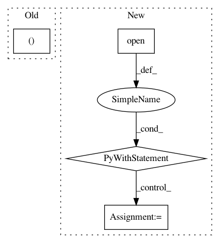

d55f51e86b575ba25010c1d44fc3d38f642e0f43,models/bist/inference.py,BISTInference,run_eval,#BISTInference#,72
Before Change
if self.write_path.endswith(".conllu"):
os.system("python %s/utils/evaluation_script/conll17_ud_eval.py"
" -v -w %s/utils/evaluation_script/weights.clas "
% (self.root_dir, self.root_dir) + self.options.conll_input +
" " + self.write_path + " > " + self.write_path + ".txt")
else:
os.system("perl %s/utils/eval.pl -g " % self.root_dir +
After Change
eval_script_path = \
os.path.join(os.path.dirname(os.path.realpath(__file__)), "utils", "eval.pl")
with open(self.write_path + ".txt", "w") as out_file:
subprocess.run(["perl", str(eval_script_path), "-g", self.options.conll_input,
"-s", self.write_path], stdout=out_file)
@staticmethod
def get_input_params(kwargs):
Args:
In pattern: SUPERPATTERN
Frequency: 3
Non-data size: 4
Instances
Project Name: NervanaSystems/nlp-architect
Commit Name: d55f51e86b575ba25010c1d44fc3d38f642e0f43
Time: 2018-04-16
Author: daniel.korat@intel.com
File Name: models/bist/inference.py
Class Name: BISTInference
Method Name: run_eval
Project Name: streamlit/streamlit
Commit Name: 8d6e295859edc8c93a2c5dded536588cf01b55e6
Time: 2018-04-28
Author: adrien.g.treuille@gmail.com
File Name: local/server/streamlit/local/io.py
Class Name:
Method Name: echo
Project Name: streamlit/streamlit
Commit Name: 5ca403cee17ee1e2a704e03bf06d47f2ce9ba222
Time: 2020-02-06
Author: naomi@nthmost.com
File Name: examples/audio.py
Class Name:
Method Name: